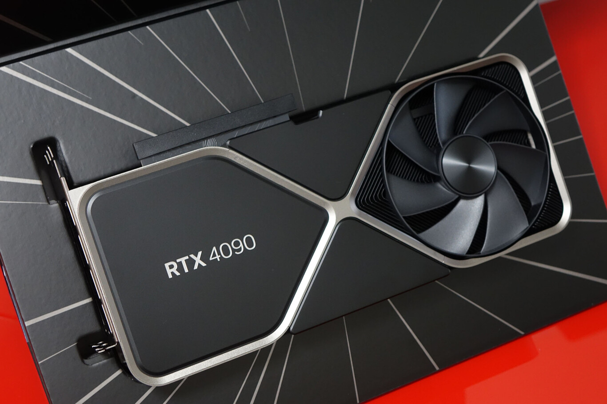
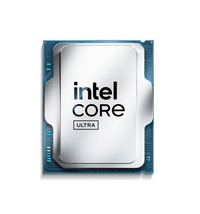
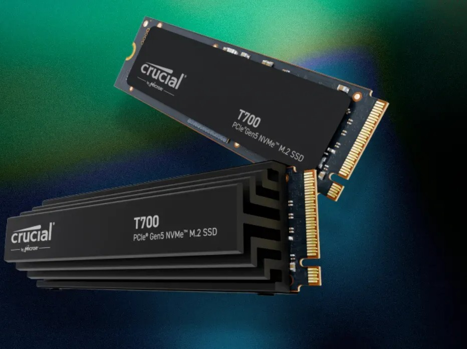

NOTICIAS GAMING
Últimas noticias y actualizaciones del mundo gaming
RTX 4090 Ti: La nueva bestia de NVIDIA
Publicado: 15/02/2026

NVIDIA ha anunciado su nueva tarjeta gráfica flagship, la RTX 4090 Ti,
con un rendimiento 50% superior a su predecesora. Esta bestia incluye
24GB de memoria GDDR6X y soporte para DLSS 4.0.
Disponible en GAMERZONE a partir del próximo mes con precios competitivos
y garantía oficial.
Intel lanza los procesadores Core Ultra 200S
Publicado: 10/02/2026

Intel ha presentado su nueva línea de procesadores Core Ultra 200S,
fabricados en proceso de 3nm. Estos nuevos chips ofrecen un rendimiento
un 30% mayor y un consumo energético reducido.
Ideales para gaming y productividad, estarán disponibles en GAMERZONE
la próxima semana.
Los mejores juegos para PC en 2026
Publicado: 05/02/2026
El año 2026 promete ser increíble para los gamers de PC. Títulos como
"Cyberpunk 2078", "Grant Theft auto 6", "Elden Ring 2" y "Starfield 2" están entre los más
esperados.
Desde GAMERZONE te ayudamos a configurar el PC perfecto para disfrutar
de estos juegos con los mejores gráficos y rendimiento.
SSD PCIe 5.0: Velocidades de vértigo
Publicado: 01/02/2026

Las nuevas unidades SSD con interfaz PCIe 5.0 están llegando al mercado,
ofreciendo velocidades de lectura de hasta 14,000 MB/s. Esto significa
tiempos de carga prácticamente instantáneos.
Ya tenemos disponibles en GAMERZONE los primeros modelos de marcas como
Samsung, WD Black y Corsair.